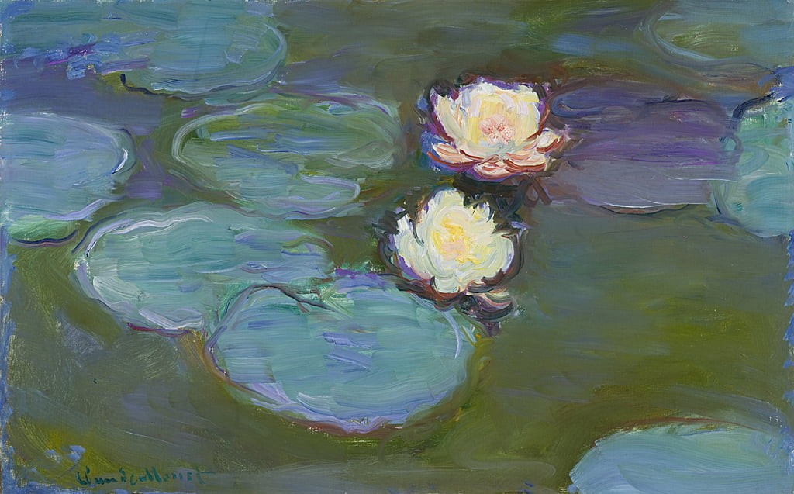
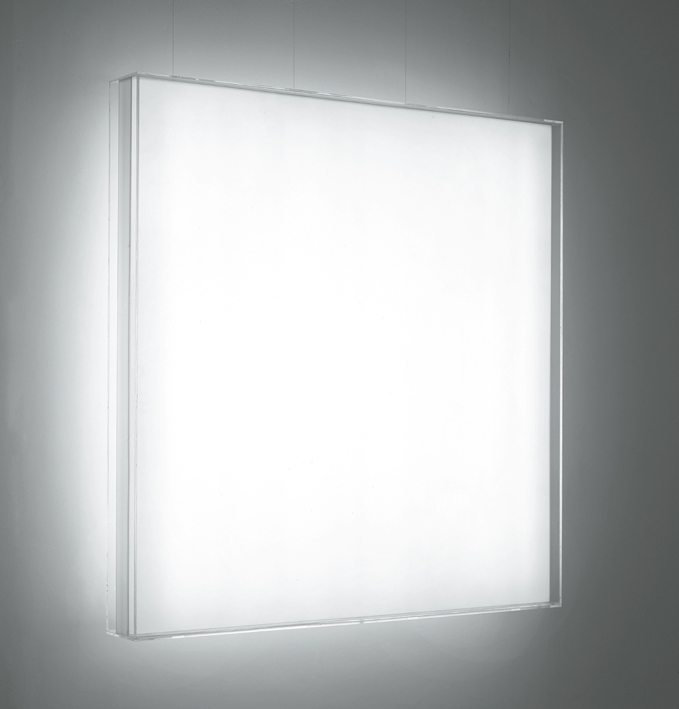
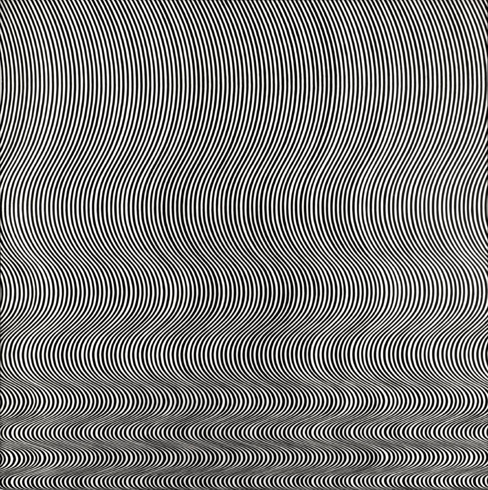
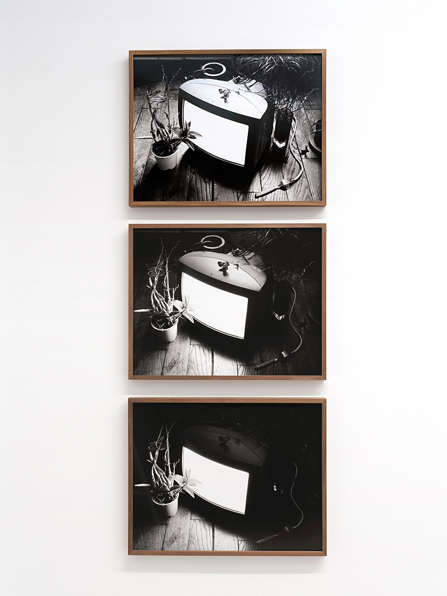
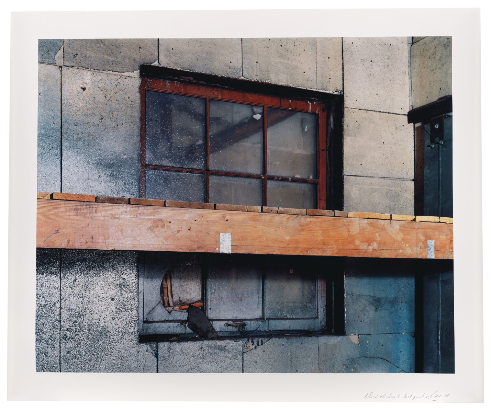
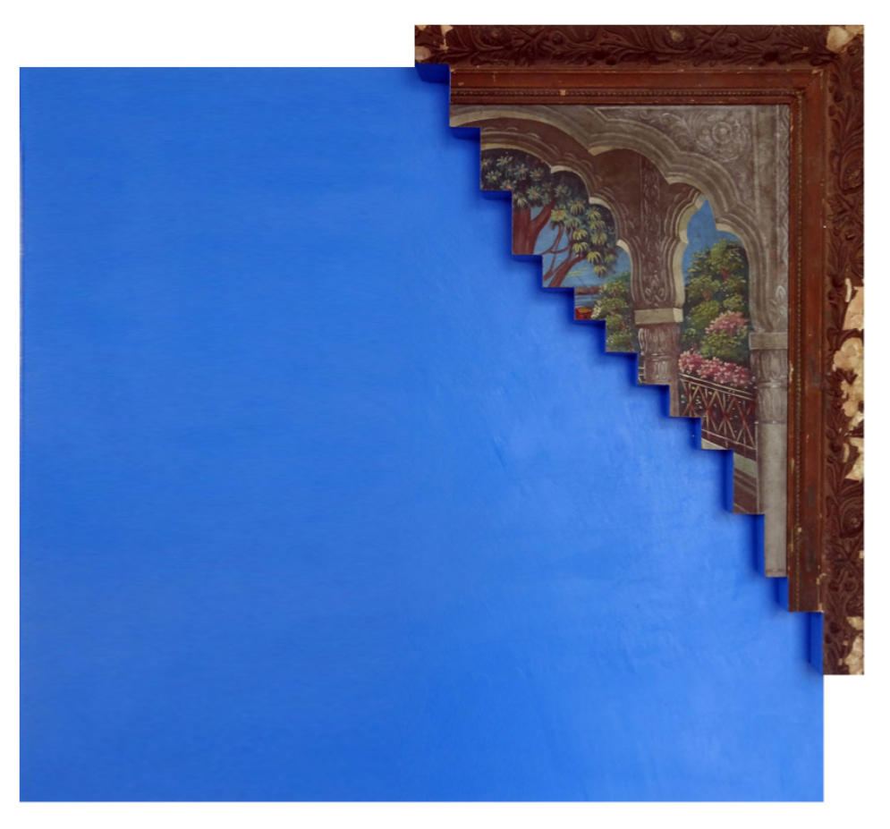
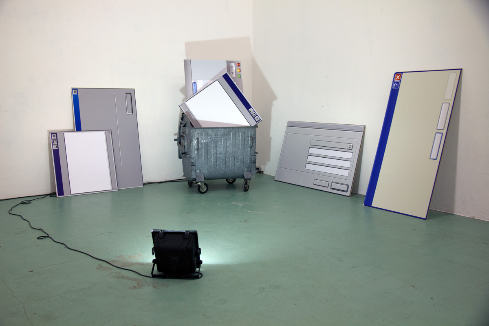
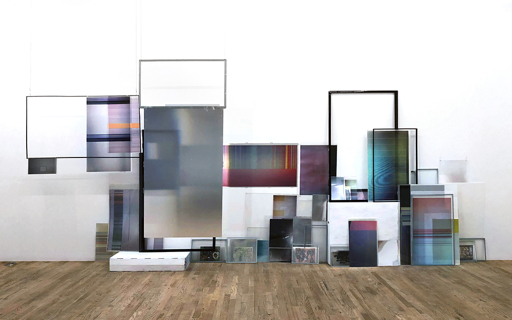
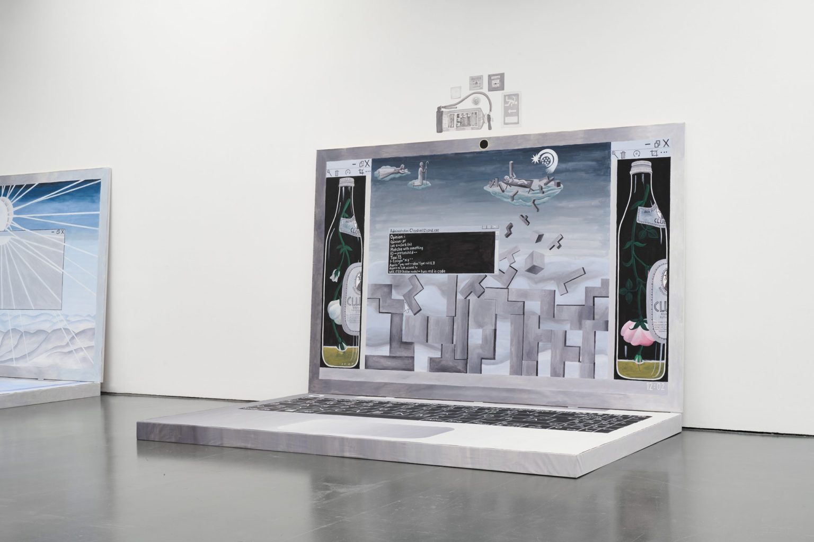

Immersion
dans
l'écran
Tous les jours je le vois mais ne le regarde pas. Il se dresse entre moi et l’image, l’écran d’ordinateur ou celui du téléphone, parfois celui de la télévision. Il est chez moi mais aussi dehors, celui de la publicité vidéo, dans les vitrines, sur le trottoir, celui du distributeur à billets, à boissons, de la borne commerciale du métro, de la gare, du supermarché. Il est quotidien, ordinaire, mais parfois me déplacer à lui est un événement, celui du cinéma ou du musée. Les écrans se multiplient autour de nous, nous permettent d’échanger avec des machines de plus en plus élaborées, ils nous montrent des images de plus en plus fines. Je passe une majeure partie de mon temps éveillé à les regarder, immergé dans l’espace qu’ils me permettent de construire. Lorsque je consulte l’écran, je laisse mon corps à sa place et y projette mon esprit. Par le regard, parfois l’écoute, j’y navigue comme un voyageur du poignet ou un explorateur des doigts. J’y lis, j’y écris, j’y joue, j’y discute, je m’y diverti et j’y travaille, mais surtout, j’y créé. Le designer doit savoir regarder son environnement, le graphiste dépasser la surface de l’image, l’artiste questionner son médium. Tous doivent connaître leurs outils pour les utiliser au mieux et ne pas en être prisonniers. L’écran est tout cela la fois, environnement, image, medium et outil. Ce n’est pourtant qu’un plan rectangulaire. Comme les chiens se tournent autour avant de jouer, pour me saisir de l’écran et ensuite y raconter mes histoires, je dois l’observer quelque temps et essayer de mieux le connaître, mieux comprendre comment j’y projette mon esprit et y invente l’espace nécessaire à cette projection. Au fil de mes questionnements j’ai trouvé des éléments de réponse à l’aune de l’histoire, de la philosophie ou de la technique. Ce sont ces modestes éléments de réponse que je partage ci-après. Modestes, car détricoter la vaste question de l’écran m’a fait tirer un fil vers d’autres questionnements bien plus larges qu’il ne serait ni pertinent ni intéressant d’évoquer ici. Alors, pour ne pas tomber dans le piège d’une exhaustivité illusoire, j’ai simplement regardé mon écran d’ordinateur, essayé de prendre un peu de distance, et en ai déduit trois caractéristiques les plus évidentes pour qu’elles servent de piliers à ma réflexion. L’écran est une surface, un cadre et une grille.
Une double définition contradictoire
Regarder l’objet écran c’est en premier lieu se confronter à la multiplicité de ses définitions. En français le mot trouve son origine au xiiième siècle, contrairement à son usage contemporain, le mot escran désigne alors une surface qui dissimule plutôt qu’une surface qui donne à voir. L’écran est un objet qui cache, il protège par exemple de la chaleur d’un foyer ou de la projection d’étincelles sur les vêtements. L’écran est simplement une paroi, un grillage. On utilise aujourd’hui le mot selon cette définition pour dire qu’un paravent fait écran au regard ou encore qu’un écran de fumée dissimule les opérations militaires de la vue des ennemies. L’écran est alors un ameublement usuel, un panneau de bois monté sur quatre pieds posé devant l’âtre, dont la matérialité induit la fonction. L’objet se perfectionnant, il peut coulisser pour protéger de la chaleur du feu, il peut se porter à la main pour protéger de la lumière, au fil de sa popularisation il prend une valeur décorative dépassant son caractère utilitaire. Les artisans écraniers en font progressivement un objet plus élégant en l’ornant de sculptures, de broderies ou de peintures.
Avec l’avènement de l’humanisme au xvième siècle tout support plat devient un support de diffusion des connaissance et l’escran n’est pas en reste. Il est alors un espace support d’images ou de connaissances sur lequel sont brodés ou peints des scènes, des éléments naturels ou des blasons. Il s’inscrit de fait dans le sillage de tous ces objets dédiés à diffuser les pensées et le savoir, des tablettes taillées des premières écritures de l’humanité aux livres imprimés par caractères mobiles se démocratisant déjà depuis le siècle précédant. Pourtant ce n’est pas encore là son utilité première, il reste un objet d’usage voir de décoration, trop vulgaire pour être considéré comme vecteur de culture.
L’idée de l’écran désignant une surface d’apparition est plus tardive et n’émerge qu’à la fin du xixème siècle pour désigner un « tableau blanc sur lequel on fait projetter l’image d’un objet ». On trouve déjà l’idée de projection d’image dans le système de la chambre noire, un instrument optique théorisé par le physicien Ibn al-Haytham dès le début du xième siècle, déjà connu auparavant d’Aristote. L’appareil permet de restreindre les rayons lumineux d’un environnement pour en projeter l’image sur un plan et implique alors une surface de réception de l’image, cette surface était alors appelée « plan » ou « tableau ». L’invention du film en nitrate de cellulose puis la diffusion publique du premier cinématographe des frères Lumière ouvre la voie d’un nouvel art, le cinéma, qui dispose rapidement de son propre lexique. L’écran désigne alors la toile, le support réflechissant la lumière projettée. La technique s’invente et son vocabulaire l’accompagne.
Cette double définition de l’écran comme dispositif voué tant à cacher qu’à révéler se trouve cristallisée dans l’art millénaire du théâtre d’ombre. Une toile ou un papier est tendu et rétro-éclairé, semi-transparent il sert de surface de réception à l’ombre des marionettes rendue visible aux spectateurs installés de l’autre côté. Pour cacher les marionnetistes du public et l’immerger dans l’histoire narrée, un dispositif de bois encadre la toile, on parle de castelet à partir du moyen-âge. Dans le livre vii de La République de Platon, Socrate expose l’allégorie de la caverne : dans une grotte, une mise en scène de théâtre d’ombre est jouée par l’arrière du public. Des spectateurs enchaînés sont condamnés à voir le spectacle qui leur est offert sur la paroi de la grotte à laquelle ils font face, faisant office d’écran de projection. Dans cet agencement, au dos du public, un muret sert d’écran occultant à leur vue les hommes manipulant les objets dont l’ombre est projetée. Le castelet ou le muret dissimulent pour mieux permettre à la toile ou la paroi de montrer, ces duos d’objets aux rôles antagonistes mais interdépendants préfigurent l’invention de l’écran tel qu’on le connaît aujourd’hui, un objet servant à délimiter un espace de regard dans lequel sont montrées des images. C’est l’écran du cinéma, qui tout à la fois occulte en cadrant l’image et dévoile en reflétant la lumière.
Qu’il cache ou qu’il montre, l’écran est toujours une surface plane, il n’a pas de relief. Ainsi, dans le contexte du cinéma, les images présentent deux strates d’informations au public : ce qui est représenté, la scène, la proposition diégétique du film, et ce qui représente, la surface, entraperçue dans les artefacts à l’image ou la poussière sur la pellicule. Pour James J. Gibson, psychologue à l’influence majeure dans le domaine de la perception visuelle, la perception faite de l’environnement et la construction de la sensation d’espace sont indissociables des notions de surface et de rebord. Il suggère dans son article The Perception of Visual Surfaces huit propriétés essentielles de l’expérience d’une surface déterminée : 1 - sa qualité d’être « visuellement resistante », c’est à dire d’être solide, d’avoir une texture 2 - ses couleurs déterminées par 3 - son éclairement 4 - son inclinaison, une surface à l’inclinaison homogène est plate 5 - sa distance 6 - la clôture de son contour, condition essentielle pour en distinguer l’unité 7 - sa forme à une inclinaison donnée et finalement 8 - sa taille à une distance donnée.
Suprématisme, non-objectivité, parergon
La question de la surface est l’une des problématiques majeures de l’histoire de l’art, si l’objectif du peintre est la représentation de la nature, la mimesis, il doit faire oublier par sa technique le caractère construit de son œuvre, donc dissimuler sa surface. L’hégémonie de la perspective dans la peinture occidentale à partir de la Renaissance tend à faire primer le caractère illusoire de l’oeuvre, ce qui est représenté est mis en valeur au détriment de ce qui représente. L’artiste minimaliste américain Donald Judd, abandonnant la peinture pour se consacrer à la sculpture, affirme que la tri-dimensionalité des représentations sur des surfaces plates est un mensonge, que l’illusionisme est un vestige de l’art européen. De fait, la surface peinte se développe alors vers son intérieur, au profit de la crédibilité de son contenu, au détriment de sa matérialité. Il faut attendre les peintres impressionistes pour que la surface peinte s’extériorise, la texture n’y est plus simulée mais matérialisée par d’épaisses couches de peintures appliquées en empâtement.
S’ouvre alors la boîte de Pandore du rejet du sujet au profit du travail de la matérialité du médium, Malevitch abandonne radicalement la figuration au profit d’une grammaire suprématiste en tension avec les limites de sa surface. Dans son manifeste de 1915 distribué à la première exposition suprématiste Du Cubisme et du Futurisme au Suprématisme. Le Nouveau Réalisme Pictural, il avance avec provocation que « si les maîtres de la Renaissance avaient découverts la surface picturale, elle aurait été supérieure et aurait eu plus de prix que n’importe quelle Madone ou Joconde ». L’Exposition 0,10 marque le commencement de l’hégémonie de l’exploration de la surface sur la représentation de la nature. Dans cette exploration, Vladimir Tatline emprunte une route opposée à celle géométrique et cadrée de Malevitch. Pour Tatline, l’art devant descendre de son piédestal, il abandonne la peinture et transpose son cubisme dans l’espace en présentant l’un de ses premiers « contre-reliefs », des assemblages de matériaux industriels emboîtés ou soudés dans lequels les courbes et les surfaces des volumes vibrent avec l’air de l’espace dans lequel ils sont disposés. Donald Judd formule, un demi-siècle plus tard dans son essai Specific Objects, le reproche que Tatline aurait pu formuler à Malevitch : « le principal défaut de la peinture est qu'il s'agit d'un plan rectangulaire posé à plat contre le mur. Un rectangle est une forme en soi [...] il détermine et limite l'agencement de tout ce qui se trouve dessus ou à l'intérieur ». En amenant ses formes vers le volume Tatline questionne leur relation au monde politique, elles deviennent des surface interragissant avec l’espace dans lequel elles sont disposées, il se dirige vers l’idée de l’art appliqué, pose les bases de l’idéal constructiviste. Malevitch, refusant toute obligation de l’art vis à vis de la société, étudie les dynamique des formes dans une surface pure, aucun bruit parasitant ne doit gêner la capacité de ses formes à amener le regardeur à ressentir des sensations. Il s’engage dans une recherche plastique spirituelle considérant le fond de sa toile comme un espace infini sur lequel gravitent des formes mises en tension par des forces propres à l’espace du tableau. Le Carré Noir initié en 1915 n’est pas tout à fait orthogonal ni tout à fait centré, le Carré Blanc de 1918 est franchement penché, attiré vers le coin supérieur droit. Le rapport de contraste et de positionement de la forme dans le blanc de la toile lui donne sa puissance évocatrice. C’est par ce vide que la forme fait sensation, il peut tout contenir, s’y trouve l’absolu.
La première exposition personelle de Malevitch à Moscou en mars 1920 est divisée en différentes salles présentant ses œuvres aux formes non figuratives par ordre chronologique. Passé ses périodes cubiste, suprématiste coloré, noir, blanc, le spectateur termine sa déambulation dans une salle ne contenant que des toiles vierges. L’artiste sulfureux y annonce sa retraite de ses activités de peintre. Quand le blanc de la toile suggère l’espace, le vide ou l’absolu, la non-objectivité de la peinture, visée essentielle du Suprématisme, est une impasse. Ni la toile ni l’environnement dans lequel elle est présentée ne permettent à la peinture d’exister indépendamment des idées qu’un regardeur peut y projetter. Contrairement aux pionniers de l’abstraction, Kandinsky en tête, Malevitch ne veut pas restituer visuellement des vibrations, il cherche à peindre du « rien », des formes sans objet ni objectif pour affirmer leur autonomie. Dès lors il a cherché à renégocier le rapport de ses peintures à leur espace environant, les vues d’expositions montrent par exemple que les tableaux suprématistes n’étaient jamais encadrés. Sortir la peinture de son cadre est alors une nécessité pour permettre son autonomisation.
L’encadrement est l’un des éléments non mimétiques de l’œuvre que l’historien de l’art Meyer Schapiro estime constitutif du signe. Dès le deuxième millénaire avant l’ère commune, certaines images sont isolées d’un trait continu. Les deux effets du cadre sont de délimiter l’image en séparant son monde de celui du spectateur et de capter son regard. Il est à la fois un dispositif de repérage et de concentration, il détermine l’espace de l’illusion en accentuant son effet de profondeur, mais n’appartient ni à cet espace ni à celui du regardeur, il est à l’entre-deux. Matériellement, le cadre est utilisé comme ornement pour adoucir ce passage d’une réalité à l’autre, il accentue la tactilité de la peinture mais aussi sa préciosité en tant qu’œuvre. La non-objectivité ne peut-être contenue dans un cadre, car si il n’y a rien dans l’image, tout est en dehors, le regardeur pose déjà des idées sur ce qu’est la toile par ce qui l’entoure. Les limites sur lesquelles ont buté les velléités de la peinture suprématistes sont celles du parergon. Concept de Derrida emprunté à Kant, le parergon est tout ce qui se détache de l’œuvre, ce qui y est ajouté car cela lui manque. Chez Kant dans Critique de la Faculté de Juger, les parerga sont ce qui n’est pas l’œuvre mais l’accompagnent, ils sont accessoires et préjudiciables car ils distraient de l’essentiel, c’est à dire de la forme. Il donne pour exemple les vêtements d’une statue, les colonnes d’un bâtiment ou le cadre d’une peinture. Derrida s’appropriant le concept dans La Vérité en Peinture porte sur le parergon un regard moins sévère en s’interrogeant sur sa nécessité pour faire exister un travail artistique, il permet à l’œuvre de déployer son énergie, il la situe et l’annonce. La marge du texte donne les limites de ce qu’il est, le cartouche muséal permet de situer l’œuvre en la contextualisant par la date, le nom de son auteur, ses matériaux. Ces éléments permettent une identification du spectateur au tableau, lui donnent des clés de lecture et de projection dans l’œuvre et, de fait, empêchent un rapport non-objectif purement sensationnel à la toile.
L’autour et le support même de la peinture lui donnent un sens, guident sa lecture, c’est le hic et nunc de l’œuvre, « l’unicité de son existence au lieu où elle se trouve », théorisé dans les années 1930 par Walter Benjamin, philosophe de l’école de Francfort. Une idée qui permettra au critique d’art britannique John Berger de démontrer dans son essai Ways of Seeing que « la manière dont nous percevons les choses est affectée par ce que nous savons ou ce en quoi nous croyons » donc que la manière dont est perçue une image présentée comme œuvre d’art est « affectée par toute une série de préjugés intériorisés sur l’art ». L’art doit être beau, vrai ou relever du génie par exemple. Cherchant à empêcher toute entrée dans son œuvre par le contexte, non content d’abandonner le cadre pour se défaire de son objectif illusioniste, Malevitch remet sa peinture comme objet en question au point de refuser le chassis, support de la toile, trop chargé d’histoire, de sémantique. À l’épaisseur de la toile montée sur un châssis il privilégie des blocs de bois ou de plâtre qui semblent venir s’extruder du mur sur lesquels ils sont présentés.
L'écran comme dispositif parergonal
L’artiste, l’œuvre et le spectateur se regardent et échangent par les voies qu’entrouvrent ces parerga se matérialisant à différentes échelles, du cadre à la salle d’exposition pour la peinture, de la marge à la reliure pour le texte imprimé, de l’interface logicielle aux bordures de l’écran pour les images numériques. L’écran, objet dichotomique par définition, à la fois surface et cadre de l’image, est cet objet aditionnel en tant qu’il complète l’image en la contextualisant, mais il est aussi essentiel pour la faire voir, sans écran il n’y a pas d’image. Le cadre et l’écran n’ont pas le même rôle vis à vis de l’image qu’ils contiennent. Le cadre peut exister sans la toile dont il est la bordure, si il est retiré du tableau, les deux existent indépendamment, à l’inverse, il est impossible de soustraire l’écran de son contenu car il n’est pas autour de l’image, il la matérialise et en est le support. Dans ce sens la dalle de l’écran serait plutôt à rapprocher de la toile de la peinture qui porte la matière.
Les écrans d’ordinateurs, de télévisions, de téléphone ou d’affichages publicitaires laissent leur regardeur aveuglé par la lumière émanant de leur surface. De la même manière qu’au cinéma le spectateur ne voit pas la toile reflétant la projection, du dispositif d’affichage numérique il ne distingue que son cadre, la surface étant toute image, lisse de verre ou de cellulose, à la définition si précise qu’en deviner l’unité élémentaire, le pixel, est devenu impossible. Si le cadre de bois protège la toile de peinture, le cadre de plastique ou d’aluminium de l’écran protège les composants électroniques nécessaires à l’affichage. Il est une bordure biseautée qui comprend tout ce qui est à l’avant de l’écran mais n’est pas l’écran, jamais orné pour n’être jamais regardé, conçu seulement pour porter l’image. Ce cadre dans sa conception timide révèle la tendance à la disparition de l’objet écran, l’évolution technique des écrans à tube cathodiques aux écrans à cristaux liquides amène logiquement l’objet à s’affiner, il devient plat, la surface de l’objet n’étant pas l’image tend à disparaître. L’écran doit être transparent dans sa conception, cherchant à se faire oublier comme parergon de l’image numérique.
L’écran contemporain est un dispositif rétro-éclairé. Marshall McLuhan, rockstar canadienne de la théorie des médias l’observe en comparant la télévision à la toile de cinéma, la projection de l’image ne se fait plus sur l’écran mais de l’écran, sur son spectateur. La salle de cinéma doit être plongée dans l’obscurité pour que l’image voyage du projecteur à la toile, sur laquelle elle est partiellement absorbée puis renvoyée aux yeux des spectateurs. Dans un musée la lumière est un parergon de l’œuvre, elle la valorise tout en étant nécessaire à sa visibilité mais aussi à sa contextualisation. Par exemple, dans les scénographies des toiles colorfield de Mark Rothko, l’ambiance lumineuse atténuée accentue le caractère méditatif de sa peinture. Projetée d’en hauteur et d’en face de la surface de réception comme au cinéma, la lumière muséale suit le même chemin, du spot à la toile, puis de la toile à l’œil. La couleur devient visible par l’absorption ou le renvoi de certaines fréquences du spectre lumineux par la peinture. La lumière de la télévision, elle, ne rebondit plus, comme celle émanant d’un vitrail elle enveloppe son regardeur. L’image n’y a plus besoin de lumière extérieure pour être visible car elle est la matière avec laquelle elle se dessine. Un écran à cristaux liquides achemine la lumière à l’œil d’une manière similaire à celle d’un panneau publicitaire de bord de route : dans un boîter des néons agencés à équidistance diffusent une lumière blanche régulière sur une affiche imprimée sur un papier juste assez fin pour la filtrer. La lumière rétro-projetée de l’écran à cristaux liquide est filtrée par un principe similaire, là où l’affiche fait office de filtre dans le dispositif publicitaire, des cellules constituées de cristaux liquides coincées entre deux couches polarisantes permettent de bloquer ou de laisser diffuser certaines ondes de la lumière selon l’orientation des cristaux déterminée par un courant électrique.
L’image à l’écran, n’étant pas localisée, est donc indépendante du contexte spatio-temporel dans lequel elle est vue. Par essence reproductible, l’image numérique est séparée de son hic et nunc, arrachée de son contexte et dépossédée de son aura au sens de Walter Benjamin. La reproduction mécanique des images de la photographie et du cinéma les allège du poids de l’authenticité. Les chefs-d’œuvres sortent du musée comme cartes postales, films documentaires ou publications sur les sites de partage de photographies. L’image est transportable, elle s’envoie et se réceptionne, la consultation d’une œuvre ne nécessite plus que le regardeur se déplace à elle pour la voir.
Benjamin observant les évolutions historiques et techniques pour saisir ce qui fait la valeur d’une œuvre d’art explique que, dans un premier temps, cacher une œuvre pour ne la révéler qu’en certaines occasions lui donne une valeur cultuelle, c’est à dire un rôle fonctionnel au service du culte. L’image est alors magique et n’a pas à proprement parler une fonction artistique car elle n’a pas pour utilité première d’être montrée. Un premier bouleversement du rôle de l’image s’opère avec la sécularisation de l’art où « l’authenticité devient le substitut de la valeur cultuelle », l’image est toujours sacralisée mais en tant qu’activité artistique, plus comme objet magique. Le regardeur n’y cherche plus la transcendance mais la beauté. Les salons et les musées deviennent les lieux du « culte profane de la beauté », l’œuvre est commandée par des particuliers aux artistes, sa valeur dépend de fait de son caractère exposable. Finalement, les techniques de reproduction mécanisées retirent à la valeur d’exposition d’une image ce qui lui reste de valeur cultuelle en tant qu’elle est une œuvre d’art. Dépossédée de son authenticitée, l’œuvre n’est plus sacralisée, son aura se résorbe. Pourtant, voir une image en tous lieux est alors déjà rendu possible par les moyens de reproduction non mécanisés, la xylographie puis la lithographie rendant possible la diffusion en masse d’images populaire, des estampes religieuses, politiques ou divertissantes vendues à un prix modeste. Plutôt que le changement du contexte d’espace et de temps dans lequel l’image est regardée, la nouveauté de la mécanisation des modes de reproduction se fait dans la transformation de l’espace et du temps du regard sur l’œuvre. L’image cinématographique est un choc pour Benjamin, le changement de plan un coup. Les premiers films présentent seize images par seconde, il est impossible pour le spectateur d’explorer du regard l’espace de l’une d’elles ni de se laisser le temps de la contempler, « à peine son œil les a-t-il saisies qu’elles se sont déjà métamorphosées. Impossible de les fixer ». Les technologies de capture et d’affichage récentes permettent des taux de rafraîchissement des images dépassant les 240 images par seconde. Sur les écrans actuels, les images sont si autonomes qu’elles se volatilisent en moins de temps qu’il ne faut pour cligner des yeux.
Leur rétro-éclairage, reproductibilité et volatilité ne libèrent pas pour autant les images de l’écran de l’autour et de l’à-côté influençant la manière dont elles sont perçues. Leur essence même induit chez le regardeur un certain nombre d’idées véhiculées par la fiction et les discours sur la technique. Voir par l’écran active un imaginaire du progrès, du futur ou des nouvelles technologies. Edmond Couchot, théoricien et pionnier de l’art numérique, s’éloigne de ces à prioris pour rendre compte des caractéristiques propres aux images numériques dans son article de 1988 La Mosaïque Ordonnée ou l’Écran Saisi par le Calcul. Leur trame n’est que nombres, c’est une matrice dont les valeurs sont instantanément modifiables, chacune représentant la plus petite unité de couleur utile à les composer. Cette unité, le pixel, se définit par deux caractéristiques, sa taille, déterminant la résolution de l’affichage, c’est à dire son niveau de détail, et son niveau d’éclairement des tons rouges, verts et bleus. Par la synthèse additive, le mélange de lumière de ces trois couleurs permet à l’œil humain d’interpréter une majorité du spectre de la lumière visible. Le pixel en tant qu’objet élémentaire des images numériques n’est pourtant pas comparable au point, l’unité de base de la peinture abstraite pour Kandinsky. Le point en peinture résulte de la rencontre entre l’outil pinceau et la surface de la toile, de la même manière que la trace lumineuse de la photographie naît du contact entre les photons et la pellicule. Les images qui apparaîssent sur ces dispositifs, même si elles peuvent ne rien représenter, sont à minima le témoignage de ces rencontres. Le pixel, contrairement au point, ne témoigne d’aucune réalité pré-existante, son état ne dépend pas d’une rencontre, seulement de modèles logiques ou mathématiques. Réduites en liste de valeurs de couleur indexées à des valeurs de position selon ces modèles, les images numériques sont transmises de la mémoire de l’ordinateur au processeur graphique pour être converties en courant analogique. Elles y passent d’un état numérique à électrique. Ce courant actualise en continu la surface de l’écran, le parcourant en de fines lignes parallèles horizontales dans un trajet similaire à celui de l’œil qui lit un texte dans un sens de lecture occidental. Ce balayage transforme les valeurs de couleur de chaque pixel de gauche à droite ligne par ligne de haut en bas. Contrairement à l’image cinématographique, pour laquelle la perception du mouvement dépend du changement l’entièreté de son plan, l’image numérique est en mutation perpétuelle, mise à jour sur le moniteur à la manière d’une imprimante de bureau qui, dès le travail terminé, le reprendrait à son point d’origine.
Caractériser les médias numériques comme des supports immatériels est un contresens commun. Contrairement à celui d’un livre, un texte affiché par une image numérique est perçu comme intangible du fait de sa volatilité. Pourtant sans un ordinateur et les matériaux dont il est constitué, l’image ne peut pas être définie numériquement, sans électricité et l’infrastructure nécessaire à la produire et l’acheminer, la lumière qui compose l’image ne peut s’allumer, sans l’écran et ses couches de polariseurs et de cristaux liquides, l’image ne peut se transmettre comme information lumineuse recevable par l’œil du regardeur. En tant que liste de valeurs stockées grâce à des transistors fermés ou ouverts, les images numériques sont dépendantes de tous ces éléments matériels jusque dans la forme de leurs contours.
Avant d’être utilisés par la télévision puis l’interface graphique des ordinateurs, les premiers dispositifs d’affichage électroniques étaient utilisés pour les radars et les oscilloscope. La surface de diffusion de ces écrans à tube cathodique était alors ronde du fait d’exigence techniques. Le tube cathodique est un dispositif positionné à l’intérieur du boîtier projettant un faisceau d’électrons sur le verre de l’écran. Recouvert d’une matière phosphorescente, l’écran frappé par le faisceau d’électrons s’illumine au point de rencontre. Pour permettre le balayage de l’écran, le faisceau doit être dévié de sa trajectoire linéaire, la forme circulaire et le volume convexe de la surface réceptive permettent de maintenir une distance régulière entre le canon à électrons et n’importe quel point de la surface d’affichage. Ainsi les premières télévisions qui n’étaient pas rondes masquaient par l’ameublement une partie haute et basse de l’écran pour lui donner un format paysage nécessaire à la diffusion d’images filmiques. Le format du film rectangulaire orienté paysage est une double nécessité psychologique et technique. Psychologique car l’orientation horizontale de l’image est une approximation de la vision humaine permettant au cerveau de reconstituer une scène crédible, technique car la forme régulière est pratique pour enregistrer et lire les images successives sur la bande de pellicule de film. La production d’écrans de télévision de forme rectangulaire devient la norme à partir des années 1950 du fait des avancées techniques permettant de diriger le faisceau d’électrons dans les coins de la surface de l’écran.
Les ordinateurs, en développement dans leur forme moderne depuis l’après-guerre, n’ont été associés que tardivement à des écrans similaires à ceux de la télévision. Les premières machines faisaient clignoter des ampoules, vaciller des cadrans ou percer des cartes pour rendre compte des résultats de leurs calculs. L’interface entre l’humain et la machine sera simplifiée par l’intégration du téléscripteur dans le dispositif, descendant du télégraphe, une machine à écrire dont la sortie peut-être transmise par radio ou câble au receveur. Les instructions y sont tapées sur le clavier et les résultats imprimés grâce à une imprimante matricielle sur une bande de papier continue. Dès les années 1960, les ordinateurs IBM et Eniac sont augmentés d’un clavier et d’un écran à tube cathodique permettant l’affichage de graphiques vectoriels et d’un terminal textuel. L’écran est alors perçu comme l’alternative à la bande de papier imprimée, les termes print, imprimer, ou TTY, téléscripteur, désignent encore aujourd’hui respectivement l’affichage d’une nouvelle ligne au bas de l’écran et le terminal conversationnel entre l’utilisateur et la machine. Au passage à l’entrée et l’affichage de commandes et de données exclusivement par l’écran se développe le mythe du bureau sans papier à la fin des années 1970. Cet argument commercial des vendeurs de solutions informatiques aux entreprises affirme que la numérisation des documents et de leur traitement permet un gain de productivité et une économie de place et d’argent. L’écran de l’ordinateur doit alors être en mesure d’afficher le même contenu que les documents imprimés, le format standard suit les besoins et l’écran du bureau s’agrandit à mesure que les interfaces graphiques et le traitement visuel des informations s’étoffent.
La forme rectangulaire en question
Qu’elle soit héritée du film ou du papier, la forme rectangulaire de l’écran peut sembler évidente. Pourtant le rectangle n’est pas une forme de la nature note Meyer Schapiro, étudiant l’omniprésence du rectangle pour délimiter la réalité des images de celle de leur regardeur. La question de l’origine du cadrage de l’image est indissociable de celle de sa surface et, pour tenter d’y répondre, il est intéressant d’interroger les usages des images à travers l’histoire.
Les limites de l’art pariétal ne sont définies que par l’accessibilité de la surface au dessinateur, les dessins y sont réalisés au gré des volumes de la paroi, parfois les uns sur les autres, à la manière dont chaque feu est allumé sur les cendres du précédant. Avec le développement de l’outillage en pierre polie au Néolithique la préparation de surfaces lisses devient possible, les céramiques et les volumes architecturaux s’offrent comme espaces porteurs de signes. Ces supports réguliers et clôts préfigurent la possibilité de représenter l’illusion de la tri-dimensionnalité, Schapiro y entrevoit l’invention de la « transparence de l’image-plan ». La bordure inférieure des panneaux de bois sur lesquels sont peints des scènes sert alors de sol sur lequel sont disposés personnages et animaux. De même, sur les céramiques mycéniennes des lignes horizontales sont tracées pour y inscrire un sol sur lequel évoluent les figures représentées. Contrairement aux peintures d’animaux pariétales flottant sur leur surface, les représentation antiques de figures humaines montrent la nécessité d’inscrire les personnages dans leur environnement en les disposant sur ce sol délimité naturellement par les limites de la surface peinte ou artificiellement par un tracé séparant la scène du reste de la surface.
La forme rectangulaire aux bordures closes, comme surface d’information, d’histoire ou de culture, se trouve dès les tablettes d’argiles mésopotamiennes. Leur utilisation pour la comptabilité au troisième millénaire avant l’ère commune engendre le développement de l’écriture, dans un premier temps pictographique puis cunéiforme. Les contours réguliers de la surface d’écriture permettent une segmentation des informations inscrites, y tracer des lignes orthogonales parallèles au rebord du support permet d’isoler les groupes de signes les uns des autres. Pour permettre la transportabilité de messages écrits, le papyrus se développe en même temps en égypte. Des coupes tissées de la plante de papyrus permettent de créer des feuilles qui, du fait de leur fragilité, ne peuvent être cordées comme les tablettes. Jusqu’à vingt feuilles de papyrus sont alors collées entre elles pour être enroulées, permettant d’y transcrire de longs textes. À l’inverse des tablettes, les rouleaux de papyrus utilisés durant l’antiquité greco-romaine servent de supports à des textes considérés plus nobles comme des textes littéraires ou des textes de loi. Un rouleau lisible horizontalement est un volumen, les paragraphes y sont diposés en colonnes serrées, tandis qu’un roulant lisible verticalement est un rotulus, permettant une lecture continue. Le contenu n’étant opposés à une bordure que sur un seul axe, les images flottent parmi le texte, révélées par l’enroulement et le déroulement progressif du support. Entre le iième et le ivème siècle le codex va progressivement remplacer les rouleaux de papyrus, notamment du fait d’une maniabilité simplifiée, plus petit qu’un rouleau, il se transporte plus facilement et ne nécessite pas d’être simmultanément déroulé en enroulé pour être lu. Consistant en un assemblage de parchemins pliés puis reliés, le codex est l’ancêtre du livre d’aujourd’hui. Son avènement constitue une révolution dans la manière de lire, le contenu d’un codex est séparé en pages permettant une lecture segmentée ou parcellaire contrairement à la lecture continue induite par le déroulement du rouleau.
La page rectangulaire et finie devenue la norme, les images y partageant l’espace du texte sont mises en pages en vignettes. Sous l’influence des limites imposées par les bordures de la page, les miniatures figurant des scènes illustratives sont contraintes par un cadre tracé. Cette démarcation du fond et de l’illustration se trouve déjà dans les plus anciens codex conservés datés du ivème ou vème siècle, les miniatures du Virgile du Vatican ou de l’Iliade ambrosienne sont systématiquement encadrées d’un fin tracé noir doublé d’un contour rouge plus épais. Cadrer l’image permet de l’isoler de son contexte, en l’entourant d’un tracé, le dessinateur délimite son espace de représentation. Le cadre explicite que le monde qu’il présente en son intérieur est une création de l’esprit à l’inverse du monde de son extérieur, l’espace de la réalité. Les rebords de l’image créent l’environnement permettant de situer les figures représentées dans un espace fictif, ils permettent de créer des rapports de distance et d’échelle entre les différents éléments qui, isolés du reste du monde dans la représentation, en deviennent plus simplement compréhensibles.
Fenêtre et cadre monde
On parle ainsi de cadrage en photographie et en cinéma pour distinguer ce que la caméra voit de ce qu’elle ne voit pas. L’objet cadre, autour d’une toile ou d’un écran, matérialise cette frontière. Il explicite le caractère de ce qui est œuvre et de ce qui ne l’est pas. L’image qui se révèle en son sein prend une dimension extra-ordinaire car séparée du monde ordinaire de l’extérieur. On trouve dans cette coupure l’origine étymologique de la contemplation, le « templum » en latin désigne la création d’un espace, la séparation entre le profane et le sacré. Non seulement l’espace du champ de vision de l’aruspice, qui cadre le ciel de son regard attendant le passage des oiseaux pour y interpréter des signes, mais aussi l’espace physique duquel il regarde, qu’il a tracé préalablement au sol à l’aide d’un bâton. Autour des images et des tableaux, ce templum est matérialisé par le dispositif du cadre. Louise Charbonnier, docteure en sémiologie, l’analyse en jouant sur les mots. Elle le désigne tant comme une coupure, une clôture et une couture. Une coupure, car il sépare l’intérieur de l’extérieur, l’image de son contexte. Mais aussi une couture car il fait lien, « pour relier l’intérieur en une unité indivisible », une couture sémiotique donc. Elle cite le philosophe Georg Simmel qui, à l’aube du xxème siècle, observe que « le cadre doit servir d’intermédiaire entre l’oeuvre d’art et son milieu que tout à la fois il relie et sépare », il est une interface qui permet, par définition, de limiter et de connecter le monde extérieur et palpable du spectateur à celui, intérieur et imaginaire, de l’image.
Tracer un cadre pour ouvrir une fenêtre sur l’intérieur. Cette fenêtre ouverte, c’est la fenêtre Albertienne. Leon Battista Alberti, figure du Quattrocento, théorise pour la première fois les principes de la perspective linéaire dans son traité de peinture De Pictura en 1435. Dans un descriptif didactique, il explique étape par étape son travail de peintre. Tout commence par un quadrilatère à angles droits délimitant la surface à peindre, le sine qua non de la « peinture histoire ». Erreur pour Malevitch, trahison pour Judd. Ce tracé annule la matérialité du support et l’existence de son environnement, le panneau ou la toile n’existe plus en tant que tel mais s’efface en devenant un espace perspectif où l’histoire peut s’établir. Isoler cet espace initial se joue comme un acte performatif, tracer un cadre revient à affirmer l’inifinité de possibles en son sein.
Tracer un cadre pour créer un monde. Le philosophe américain Nelson Goodman propose cette idée dans Manières de Faire des Mondes en 1978. En opposition aux idées réalistes selon lesquelles l’environnement est constitué d’objets fixes, indépendants de l’esprit, il refuse l’idée d’un monde unique, donné, mais affirme qu’il en existe une multiplicité, chacun façonnés par les perceptions individuelles. La construction de mondes est alors affaire d’esprit, une construction perpétuelle. En proposant une description de sa manière de percevoir le monde l’artiste, le philosophe ou le scientifique, ouvre un cadre dans lequel se créé sa proposition de monde. Pour créer un monde, il s’agit de le décrire. Le cadre est ici plus conceptuel que matériel, c’est à dire le cadre comme l’environnement dans lequel une proposition peut exister, son framework. Chaque cadre pose des limites à la description / création du monde, par exemple le poète créé dans les limites de la langue, en traçant son cadre il peut lui même définir les règles régissant son système de représentation du monde. Comme les règles d’un jeu sont des conventions acceptées par les joueurs pour partager leur activité, son cadre de référence est, pour le créateur de monde, un outil conceptuel au service de son expression. Dès lors, le cadre matériel d’une toile ou le tracé autour d’une image se pose comme limite en dehors de laquelle les présupposés du cadre de référence ne sont plus valables. De cette manière, le contour fondamental de la peinture d’Alberti délimite sa grille de perspective lui permettant de contrôler la composition et l’interaction entre les éléments de sa représentation.
Le cadre suture devient structure, une surface dans laquelle sont induits les rapports des élements qui le composent. Créer un monde nécessite d’envisager un système de coordonnée sur lequel disposer les éléments servant sa description. Une fois ce référentiel déterminé, il s’agit d’inventer un vocabulaire d’unités élémentaires pour le peupler. C’est la méthode des avant-gardes russes, les poètes du mouvement Zaoum décomposent la langue en sons pour laisser libre cours à leur expressivité, de la même manière le point chez Kandinsky comme la grammaire formelle de Malevitch permettent d’isoler des éléments graphiques comme unités d’expression. Le phonème du poète comme le point ou la forme du plasticien sont l’atome de leur proposition de monde. La disposition de ces atomes dans un cadre de référence implique d’infinies possibilités constructives, chacune déterminées par les relations entres ces unités élémentaires et les caractéristique de leur référentiel. L’affichage d’une image à l’écran suit ce processus de décomposition / construction. L’image y est découpée en cadrillage, divisée en unité élémentaire de couleur. La matrice délimitée par les bordures de l’écran se pose comme son cadre de référence, le pixel comme son unité élémentaire. Allumer un écran revient alors à tracer un cadre, ouvrir un possible. Chaque actualisation des pixels implique virtuellement la création d’un nouveau monde, la possibilité de soixante cosmogonies par secondes.
Espaces interfaciques
Ces idées d’infinité de mondes possibles et d’extérieur autre se retrouvent cristallisées dans la sémiotique de la fenêtre, la Windows évoque un imaginaire profitable au vendeur de système d’exploitation. Au démarrage de son ordinateur personnel, l’utilisateur se trouve face à un fond d’écran ouvrant sur une île paradisiaque ou une plaine ensoleillée. L’écran, dans l’espace architectural qui l’environne, devient cette fenêtre sur le monde dans lequel l’utilisateur rêve se trouver. Posé sur un meuble ou un bureau, l’arrière rendu le moins visible possible en l’approchant d’un mur, l’écran d’ordinateur ou de télévision, contrairement à celui du cinéma, produit moins un effet d’ouverture qu’un effet d’incrustation. C’est à dire qu’il fait entrer l’espace extérieur dans celui de l’intérieur. Cet espace ouvert devient celui d'une mise en abyme lorsqu’au clic, l’utilisateur de l’ordinateur y ouvre une fenêtre d’interface. Un même écran peut afficher un nombre de fenêtres limité seulement par la puissance de l’ordinateur qui les génère. Ces fenêtres peuvent être elles même divisée par des onglets, des menus déroulants. Chaque nouvelle délimitation de l’espace de l’écran est un nouveau cadre qui s’ouvre en superposition des précédents, délimité de son fond par un fin tracé ou une légère ombre portée. Le mode de navigation dans l’environnement des interfaces numériques s’éloigne de celui sous tendu par la fenêtre albertienne, où le corps de regardeur serait immergé dans l’espace perspectif, mais se focalise sur une représentation métaphorique plane de la surface d’un bureau sur lequel viendraient se superposer des feuilles de papier. Ce n’est pas le corps de l’utilisateur qui s’y déplace et y interragit avec les différents éléments disposés mais uniquement sa main, représentées par le curseur.
Encadré dans sa fenêtre, le logiciel est un lieu-outil, à la manière du bureau ou de l’atelier dans lequel le menu sert de rangement. Ces paradigmes d’interface métaphoriques permettent aux utilisateurs de se saisir de ces outils et de ces environnements numériques abstraits, d’y reproduire des usages qu’ils connaissent, d’accroître l’accessibilité pour un public non initité en y permettant une interaction plus instinctive que celle de l’échange par la ligne de commande. C’est d’après cette même logique de métaphore spatiale que le web est développé et popularisé dans les années 1990, pensé comme une bibliothèque, un lieu-document cartographié par une toile dans laquelle l’utilisateur navigue de nœud en nœud. Les documents mis en réseau y deviennent des sites, identifiés par une adresse, et se visitent, comme se visitent les pièces d’un bâtiment, chaque page devenant, d’une représentation visuelle en deux dimensions, une représentation mentale en trois dimensions. Tandis qu’augmentent les capacités des ordinateurs personnels et que la pratique de l’interaction avec des environnements numériques tri-dimensionnels s’invente par le jeu-vidéo, une volonté émerge au milieu des années 1990 de représenter les espaces mentaux induits par les interfaces numériques comme des espaces pespectifs rendus en temps réel dans lesquels l’utilisateur peut se déplacer et changer de point de vu. Ces représentations ne seront que peu adoptées par le grand public, l’avantage de la représentation d’un espace perspectif sur celui d’une interface abstraite basée sur des principes de métaphore se trouvant supplanté par les difficultés d’utilisation induites par une complexification accessoire des usages déjà possibles par des interfaces bi-dimensionnelles.
Les audaces visuelles de l’avant-garde artistique du début du xxème siècle ont ouvert la voie à un nouveau regard sur la représentation de l’espace par la surface, un regard émancipé de la nécessité d’une illusion. Les théories héritées du Bauhaus, lieu de cristallisation de cet élan révolutionnaire, transforment le rapport à la communication par l’image. L’usage de formes, de couleurs ou de typographie y est systématisé, tout choix visuel devient porteur de sens. La page ou l’affiche se fait support de ces unités de sens, pour organiser leur interdépendance l’usage d’une grille typographique moderne se démocratise et se voit théorisé par Joseph Müller-Brockmann dans son livre Système de grille pour le design graphique. En séparant l’espace vierge de l’affiche en territoires délimités par les frontières de la grille dans lesquels ils disposent leurs éléments typographiques et picturaux, les graphistes modernes systématisent la disposition d’informations dans l’espace et visent l’utopie de leur accessibilité universelle. L’héritage de cette visée universelle et systématisée perdure dans la conception des interfaces numériques, chaque signe iconographique, typographique, pictographique, formel ou coloré est disposé à l’écran selon une grille préalablement établie de manière à être simplement lisible en relation avec son ensemble. Les objectifs de lisiblité, d’accessibilité, de clarté ou d’usabilité y priment sur l’expressivité ou la singularité, qui ne sont que des enjeux secondaires de la conception d’une interface numérique. Il existe pourtant une différence notable entre la grille typographique imprimée et celle de l’écran. Le contenu imprimé sur une page se conçoit selon les dimensions de cette dernière, la grille s’adapte aux limites établies du support et la conception d’une composition est immuable. À l’inverse, la grille écranique et son contenu sont succeptibles d’être changés à chaque reproduction. Le concepteur d’interface ou de documents numériques doit prendre en compte la multiplicité des formats des écrans par lesquels sera rendu accessible sa création, c’est un problème particulièrement crucial pour les designers de sites web, aujourd’hui consultés sur une variété de dispositifs aux dimensions et orientations hétérogènes. La solution à ce problème est l’adaptabilité du contenu à l’appareil sur lequel il est vu, on parle de site web réactif, par exemple le nombre de colonnes d’une grille peut varier selon la largeur de l’écran. Mais au-delà de la multiplicité de formats d’écrans, la conception visuelle numérique implique l’impossibilité d’une reproduction systématiquement identique. Chaque écran rend les couleurs différement, selon ses configurations, son niveau de luminosité, la qualité de sa fabrication, chaque système peut interpréter et rendre une image différente, variant au fil des mises à jour. Donner à voir une image numérique revient à proposer autant de version qu’il existe de dispositif pour la voir.
Pour conclure
Essayons de reprendre brièvement point par point. Les écrans qui nous entourent sont des surfaces neutres et froides. Nous y voyons des images volatiles, faites de lumière. L’interprétation que nous faisons de ces images est liée au contexte dans lesquelles nous les voyons. Elles sont toujours délimitées par un cadre rectangulaire. Ce cadre délimite la représentation mentale d’un espace. Les règles qui régissent cet espace et les éléments qui le composent en font une proposition de monde. Toute les délimitations dans l’écran sont la possibilité d'un nouvel espace-monde. Chacune de ces propositions n’est jamais fixe et atteint différemment chaque regardeur.
Où est-ce que ces réflexions m’emmènent ? Je crois que cette suite de proposition m’a conduit à mieux comprendre ma fascination pour l’écran, l’ordinateur ou le web. Allumer son écran c’est avoir la sensation d’une ouverture sur le monde, peut-être qu’il est plus juste de considérer que c’est une ouverture sur un monde qui sera tout autre que celui de mon voisin. C’est d’autant plus vrai si l’on prend en considération les questions de personnalisation algorithmique des informations auquelles chacun accède. D’un regard pessimiste, on pourrait considérer que l’usage croissant du numérique amène à relativisme global, à la disparition des images communes ou des cadres fédérateurs. Je préférerais porter le regard d’un créateur, utiliser les outils numériques pour créer de nouveaux cadres est une formidable opportunité pour proposer sa vision du monde, faire naître l’alternative par l’écran. Les question sur l’autour de l’image, les conditions et le contexte sa création, permettent de se tracer un espace de liberté dans lequel l’expression peut exister librement. L’essentiel de ma pratique est d’affirmer la possibilité de la poésie dès l’interface entre les mondes.
Bibliographie
Livres
- BODINI Jacopo, CARBONE Mauro (dir.) Voir selon les écrans, penser selon les écrans.
Éditions Mimesis (Collection : Images, Mediums). 2016. 140p. - DERRIDA Jacques. La Vérité en Peinture.
Éditions Flammarion (Collection : Champs essais). 2010. 448 p. - CHARBONNIER Louise. Cadre et Regard : Généalogie d'un dispositif.
Préface de SOULAGES Jean-Claude. Éditions L'Harmattan (Collection : Histoires et idées des Arts). 2007. 316p. - SIMMEL Georg. Le Cadre et autres essais.
Éditions Gallimard (Collection : Le Cabinet des Lettrés). 2003. Traduit de l'allemand par Karine Winkelvoss. 112p. - BENJAMIN Walter. L'œuvre d'art à l'époque de sa reproductibilité technique.
Éditions Gallimard (Collection : Folioplus Philosophie). 2008. Traduit de l'allemand par Maurice de Gandillac, révisé par Rainer Rochlitz. 176p. - BERGER John. Voir le Voir.
Éditions B42. 2014. Traduit de l'anglais (Royaume-Uni) par Monique Triomphe. 168p. - ALBERTI Leon Battista. De Pictura.
Éditions Allia. 2007. Traduit du latin par Danielle Sonnier. 96p. - WAJCMAN Gérard. Fenêtre : Chroniques du regard et de l’intime.
Éditions Verdier (Collection : Philosophie). 2004. 480p. - FRIEDBERG Anne. The Virtual Window : From Alberti to Microsoft.
MIT Press. 2006. 448p. - ARNHEIM Rudolf. The Power of Center : A study of Composition in the Visual Arts.
Univ of California Press. 2009. 239p. - GOODMAN Nelson. Manières de faire des mondes.
Éditions Gallimard (Collection : Folio Essais). 2006. Traduit de l'anglais (États-Unis) par Marie-Dominique Popelard. 240p. - MÜLLER-BROCKMANN Josef. Systèmes de Grille pour le Design Graphique.
Éditions Entremonde. 2017. traduction française de Pierre Malherbet. 176p.
Articles
- ANDERSON Joseph D. Scene and Surface in the Cinema: Implications for Realism.
Cinémas, 12 (2). 2002. - GIBSON James J. The Perception of Visual Surfaces.
The American Journal of Psychology, 63 (3). 1950. - JUDD Donald. Specific Objects.
Arts Yearbook, 8. 1965. - JAKOVLJEVIC Branislav. Unframe Malevich! : Ineffability and Sublimity in Suprematism.
Art Journal, 63 (3). 2004. - SCHAPIRO Meyer. On Some Problems in the Semiotics of Visual Art: Field and Vehicle in Image-Signs.
Simiolus: Netherlands Quarterly for the History of Art, 6 (1). 1972. - COUCHOT Edmond. La Mosaïque Ordonnée.
Communications, 48. 1988. - LOUVEL Liliane. De quelques problèmes théoriques : marges et cadres. De la coupure comme principe théorique. La coupure et le cerne.
Polysèmes, 11. 2011. - ZIMMERMANN Laurent. La désintégration esthétique.
Effets de cadre: De la limite en art, Presses universitaires de Vincennes. 2003. - PAUL Christiane. Digital Art Now : Histories of (Im)materialities.
International Journal for Digital Art History, 5. 2020.
Thèses
- SMOLIANSKAIA Natalia. Crise du Cadre (Art et langage).
Sous la direction de A. Soulez. Philosophie. Université Paris viii. 2006. - KILIAN Axel. Defining Digital Space Through a Visual Language.
Sous la direction de W.J. Mitchell. Architecture. University of the Arts Berlin. 2000.
Remerciements
- Pour m'avoir accompagné lors de l'écriture de ce mémoire je remercie Maxence Alcade et Jean-Noël Lafargue.
- Pour m'avoir amené à questionner ma relation aux outils et média numériques je remercie Bachir Soussi-Chiadmi.
- Pour la qualité de son enseignement et son regard encourageant sur mon travail je remercie l'équipe pédagogique de l'ESADHaR Le Havre.
- Pour ses relectures et son soutien je remercie Blandine Degearier.
- Crédits typographiques : GT America, de Noël Leu avec Seb McLauchlan pour Grilli Type et Input, de David Jonathan Ross pour Font Bureau.